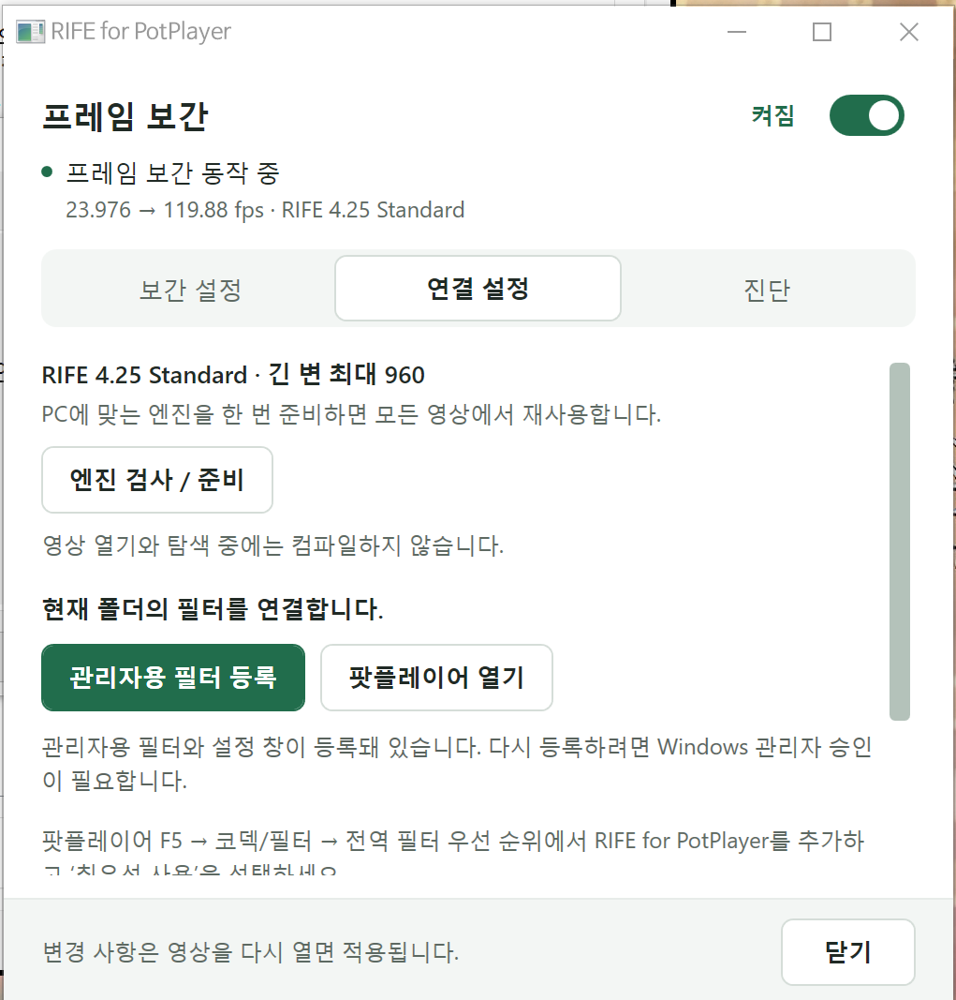
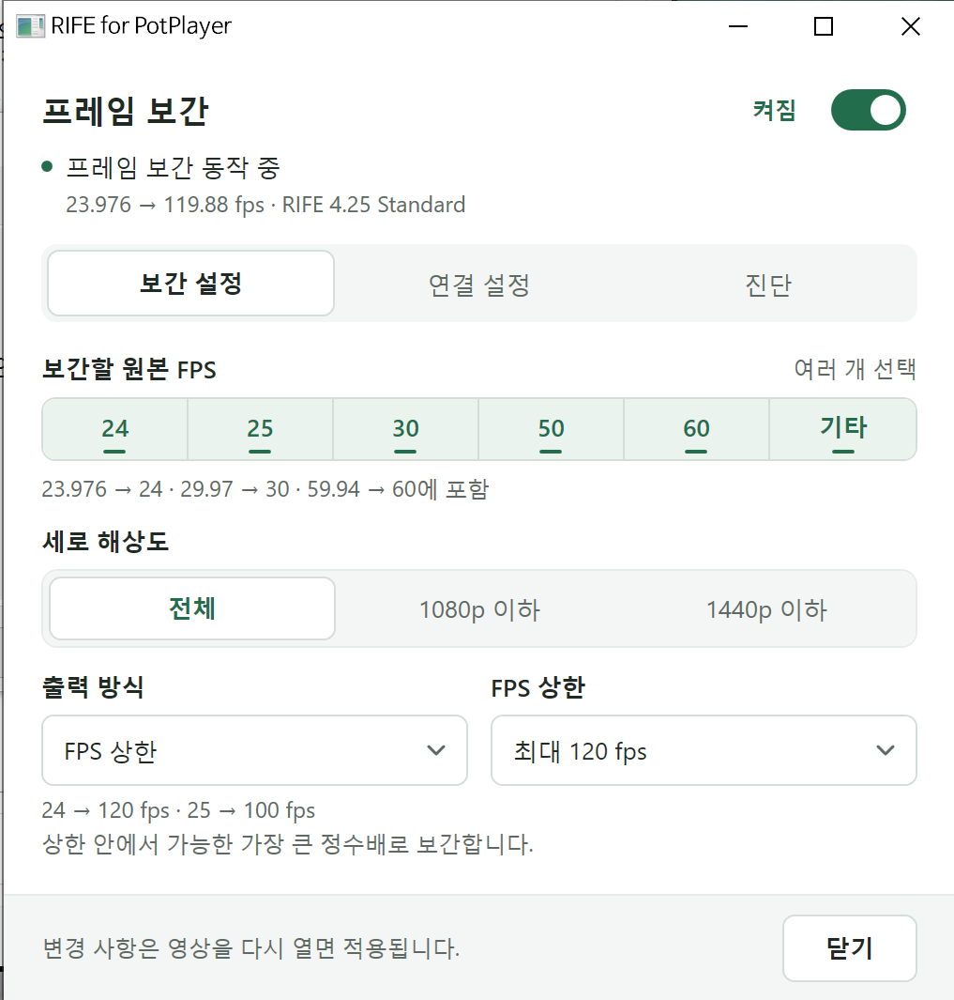
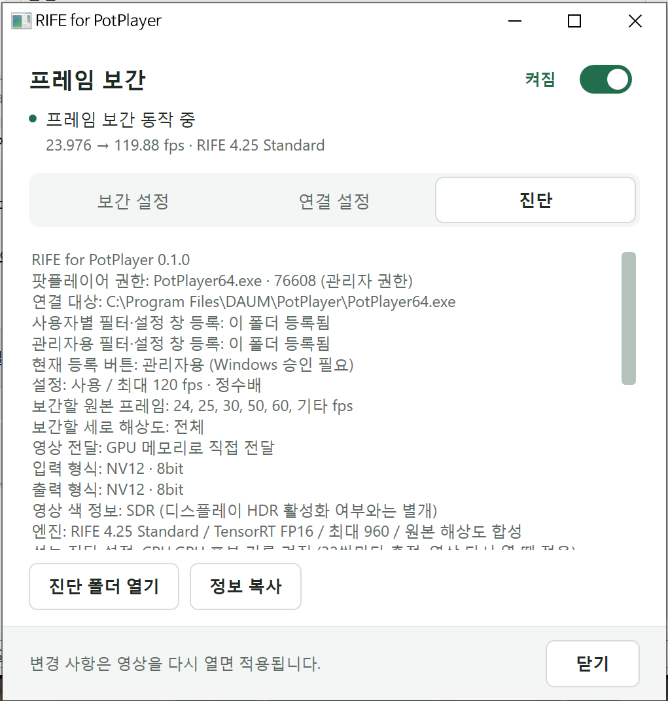

RIFE for PotPlayer
User guide
RIFE interpolation at the original source resolution. Set up the filter, choose your frame rate and check playback.
v0.1.0-beta · 2026-10-15 · Offline HTML manual
Connect for the first time
Extract the complete archive and run RifeControl.exe. No separate .NET, Python or VapourSynth installation is required. PotPlayer and the NVIDIA graphics driver are separate prerequisites.
- Extract the whole folder to a fixed, writable location. Do not move only the EXE.
- Open 연결 설정 (Connection) → 엔진 검사 / 준비 (Check / prepare engine). A compatible engine is reused. If preparation is needed, close PotPlayer and build the engine once for this computer.
- Choose 필터 등록 (Register filter). If PotPlayer runs elevated, the button reads 관리자용 필터 등록 (Register for administrator) and Windows requests elevation.
- In PotPlayer, open F5 → Filter Control → Global Filter Priority → Add system codec. Add RIFE for PotPlayer, enable it and select Prefer / highest priority. Do not enable another interpolation filter at the same time. Menu wording varies with the PotPlayer translation.
- Reopen the video. Check 프레임 보간 동작 중 (interpolation active) and the input → output frame rates at the top of the RIFE window.
Registration and selecting the filter in PotPlayer are separate steps. Registration alone does not make PotPlayer use RIFE.


Requirements and engine reuse
This beta targets Windows x64 and supports PotPlayer64.exe and PotPlayerMini64.exe. The main tested system is Windows 10 22H2 with an RTX 5090 and NVIDIA driver 617.42.
| Item | Details |
|---|---|
| Included | RIFE 4.25 Standard model, TensorRT 10.16.0.72 / CUDA 13 family runtime, .NET/WPF runtime and engine preparation tools. |
| Reuse across videos | A fixed guide input with a maximum long edge of 960 avoids per-video engine builds. |
| Another PC or GPU | Run the engine check first. GPU or runtime changes may require preparation. This beta includes SM120 / PTX builder resources; other GPUs and their performance have not been validated. |
| GPU memory | Usage depends on source resolution, interpolation multiplier, renderer and VSR. |
| Package format | A self-contained portable ZIP, without an installer. DirectShow filter registration is still required. |
Engine preparation may take several minutes or longer. The playback filter does not compile TensorRT engines when opening or seeking a video. Initial CUDA command preparation is separate from engine compilation. Keep the executable, runtime and model from the same package together.
Interpolation settings
Use the top switch to enable interpolation. Reopen the video after changing settings. The release defaults to a 60fps output cap. The current application interface is Korean; the English labels below explain the controls.
| Control | Behavior |
|---|---|
| 보간할 원본 FPS Source FPS | Select any of 24, 25, 30, 50, 60 and Other. 23.976 belongs to 24; 29.97 to 30; 59.94 to 60. |
| 세로 해상도 Source height | Choose all inputs, up to 1080p or up to 1440p. |
| FPS 상한 FPS cap | Uses the largest integer multiplier within the cap. At 120: 24→120, 25→100 and 23.976→119.88fps. |
| 원본 배수 Source multiplier | Uses a fixed multiplier. For example, 60fps ×4 → 240fps. Higher multipliers also increase GPU work. |
| 해상도별 설정 Resolution rules | When enabled, a matching resolution rule overrides the common output setting. |


Startup and seeking
At first playback, original frames are shown for approximately 100ms of wall-clock time while interpolation is prepared. Audio continues and playback start is not held back. The original-preview threshold after seeking is 50ms. Actual interpolation resumption also depends on input frame spacing and acquiring a new adjacent pair.
How it works and video compatibility
RIFE estimates motion and blending masks at a maximum guide long edge of 960, then uses them to compose the original-resolution pixels. It does not upscale a completed 960-pixel RGB result. Inference uses TensorRT FP16; coordinates, selected operations and I/O remain FP32.
Scene-cut handling holds original frames instead of blending unrelated scenes. Detection was tuned to reduce false cuts on fast motion and lighting changes; perfect detection on every source is not guaranteed.
| Input / path | Coverage and limitations |
|---|---|
| 8-bit SDR | NV12 has been validated. A D3D11 decoder and D3D11 renderer are recommended. |
| 10-bit SDR / HDR | Composition uses original P010 code values. HDR10 / HLG color information and static metadata paths have been tested. The filter does not tone-map. |
| HW ↔ SW switching | Hardware input, software input and reconnect tests cover format and HDR metadata retention. Actual connection support depends on the decoder / renderer combination. |
| Interlaced / 4:2:2 | Software interlaced input handling and P210/Y210 conversion paths have been tested. This does not cover every codec combination. |
| Dolby Vision | Coverage is decoder-provided metadata forwarding. It does not certify every profile, FEL processing or actual Dolby Vision display output. |
| Limitations | HDR10+ dynamic metadata forwarding is not implemented. Some color formats, including full-range and BT.601 paths, may be rejected. |
Landscape, portrait and square sources reuse the same engine. Portrait guides rotate internally; small sources are not forcibly enlarged to fill the guide.
Diagnostics and troubleshooting
The 진단 (Diagnostics) tab shows the connected player, registration location, video transport, pixel format, HDR information and profiling state. Live updates preserve your scroll position and text selection. A hidden tab receives its latest display update on the next refresh after it is shown.


Use 정보 복사 (Copy information) for diagnostic text and 진단 폴더 열기 (Open diagnostics folder) for logs. The log location is %LOCALAPPDATA%\RifeStandardPotPlayer. Detailed profiling is enabled in this beta, sampled every 32 input pairs.
TensorRT inference, D3D11↔CUDA sharing / waits and original-resolution composition are measured separately. CPU and GPU work overlap, so these durations cannot simply be added. Logs are written on a separate thread without making playback wait for storage.
The filter is registered but interpolation does not start
Check that RIFE is enabled and preferred in PotPlayer’s global filter list. Match the player’s elevation with filter registration. Verify the source FPS and height are selected, then reopen the video.
Engine checking or preparation fails
Extract the full ZIP and close PotPlayer before preparing an engine. Check the engine logs in the package’s logs folder. A different GPU may need its matching builder resources from the same TensorRT version.
HDR state or colors look wrong
Check both input / output pixel formats and the video color information. 10-bit SDR is not HDR. Windows HDR being enabled does not mean the source is HDR. Also inspect decoder and renderer HDR / tone-mapping settings.
Performance and known limitations
8K 60fps ×4 → 240fps was tested in PotPlayer on an RTX 5090. Some measurements showed no additional drops during sustained playback, while startup drops remain. This is not a guarantee of drop-free playback on every PC, video or renderer configuration.
Match resolution and output FPS to your GPU. If the GPU cannot keep up with the video resolution and target output frame rate, the Dropped counter may keep increasing during playback. Lower the interpolation multiplier or FPS cap, or use a lower-resolution source when needed. Enabling VSR increases GPU demand further. Reopen the video after changing settings and check whether drops continue to increase in the same segment, then adjust for your hardware.
- Startup drops: the 100ms original-frame preparation window is retained. Remaining startup drops are a long-term improvement task.
- VSR contention: GPU Super Resolution plus a high interpolation multiplier can increase GPU load and drops during moving scenes. Turning VSR off stopped the drop increase in a comparison on the same segment. This contention is a long-term improvement task.
- Display refresh: output FPS and monitor refresh rate are different. A 165Hz display cannot show all 240 distinct frames each second.
For comparisons, keep the video segment, window size, VSR and output settings unchanged. Record the Dropped counter at both the start and end. A lower output cap or multiplier can provide more GPU headroom when needed.
Using VSR alongside interpolation
This filter’s RIFE TensorRT FP16 inference and NVIDIA RTX Video Super Resolution (VSR) both use Tensor Cores. Running them together can create contention for the same GPU’s compute resources. At high resolutions and output frame rates, interpolation or upscaling may fall behind and drops may increase. Memory bandwidth, rendering and synchronization also contribute, so a drop cannot automatically be attributed solely to Tensor Cores. If drops keep increasing, reduce the interpolation multiplier, FPS cap or VSR quality to leave more GPU headroom. Temporarily disabling only VSR and comparing the same segment can help identify contention. NVIDIA documents VSR’s Tensor Core usage in its RTX Video FAQ.
Update, move or remove
- Close PotPlayer and the RIFE control window.
- Back up the existing folder and
RifeStandardPotPlayer.ini. Extract a new release into a separate folder. - Reopen RifeControl.exe from the old folder, choose 연결 설정 → 등록 해제 (Unregister), then close that control window before moving or deleting the old folder. Open RifeControl.exe from the new folder, check the engine and register the filter again.
- To remove RIFE, remove it from PotPlayer’s global filter list, unregister the RIFE filter, then delete its folder.
RIFE uses separate registration IDs, settings and status paths from NVOF. This package does not replace an existing NVOF installation.
Files and licenses
RifeControl.exe is the settings app; RifeStandardPotPlayer.ax is the filter. models holds the model, engines the prepared engine and runtime inference dependencies. Keep this folder structure intact.
Project code is MIT licensed. NVIDIA and Microsoft runtimes and model components retain their respective terms. See LICENSE, THIRD_PARTY_NOTICES.md and licenses in the package. This is an independent project, not an official NVIDIA, Microsoft or PotPlayer product.
All three settings screenshots were supplied by the user and show RIFE. Back to top